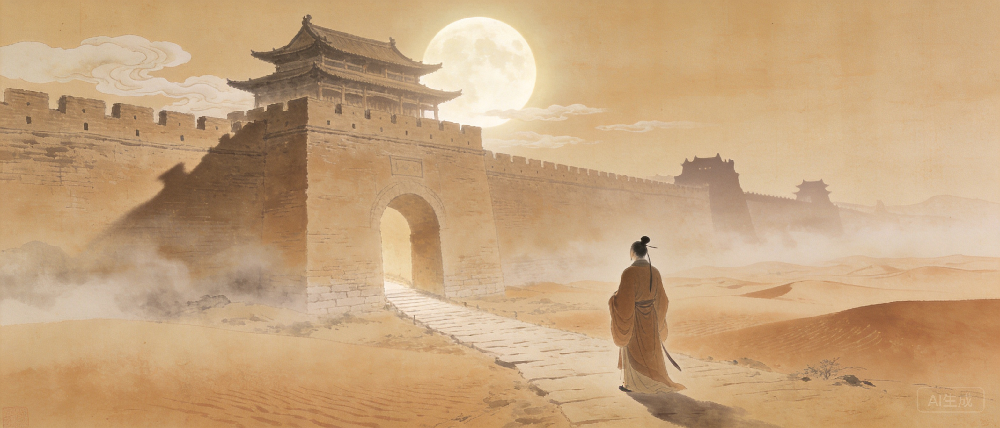
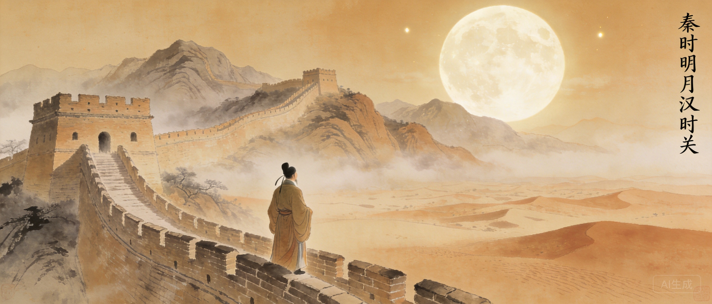
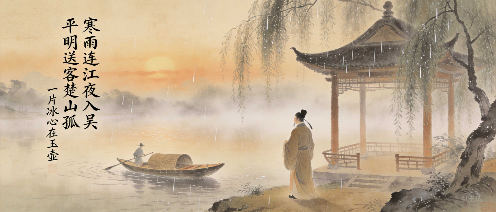
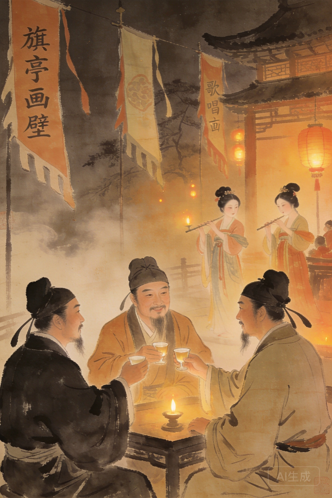
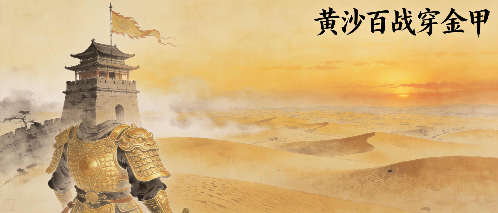

字少伯。开元十五年进士及第。青年漫游西北边塞。
与王之涣、高适交游，诗名渐起。
因事被贬，写下大量边塞与送别诗。
北归后任江宁丞。因不拘小节，为官场所苦。
被谤贬龙标尉。李白写诗遥寄。
安史之乱中弃官还乡，被刺史闾丘晓所杀，年五十九。


「秦时明月汉时关」——七个字包含秦月、汉关、万里长征、人未还四重意象。李攀龙推为唐人七绝压卷。其妙在于：不写当前战场，却将千年悲壮浓缩为一瞬；不言战争残酷，却使读者自见征人之苦。而「但使龙城飞将在，不教胡马度阴山」更将批评时政化为一腔期许——不是反战，是盼良将。
**从《出塞》开始读。** 四句，二十八字。读完只需要十秒，但秦时明月汉时关——你会用一个上午想这四个词为什么放在一起就让人想哭。然后读《芙蓉楼送辛渐》，你会发现同一个人能写出最苍凉的边塞也能写出最干净的友情。
与李白并称七绝双璧。殷璠编《河岳英灵集》选王昌龄诗最多，称其诗家夫子。
开元年间，王昌龄、高适、王之涣在旗亭饮酒，以歌女唱诗多寡定胜负。此为唐诗史最著名的雅集之一。
王昌龄被害后，张镐为相，令闾丘晓平叛。闾丘晓求饶：家有老母。张镐答：王昌龄之母，谁来赡养？遂斩闾丘晓。这是中国文学史上最著名的报仇之一。
王昌龄的手艺是把一个转瞬即逝的感受凝固为可以传唱千年的画面。「秦时明月汉时关」——七个字，秦、汉、月、关，四个时空拼贴出千年的战争与乡愁。李攀龙推为唐人七绝压卷之作。七绝只有二十八字，王昌龄却能在其中放进整个宇宙——不是压缩，是他比别人更善于找到那个让一切同时存在的焦点。
一种「含而不露」的极致。王昌龄写悲伤不直接写悲伤——他写一片冰心在玉壶。写战争不直接写战争——他写秦时明月和汉时关。他是盛唐最克制的诗人：所有的情感都压在水面下，水面只有月光。

旗亭画壁的另一主角。欲穷千里目，更上一层楼的作者。
王昌龄被贬龙标，李白写《闻王昌龄左迁龙标遥有此寄》遥寄。
旗亭三人之一。唐代诗人中仕途最显赫者。
王昌龄活跃的年代，西方的查理曼大帝还没有出生。阿拉伯帝国在阿拔斯王朝治下进入黄金时代，巴格达的智慧宫里正在翻译希腊哲学。中国的盛唐和阿拉伯的黄金时代是同一条经线上的两朵花。
王昌龄被推为「七绝圣手」——七言绝句这种形式的最高成就者。李攀龙、王世贞等明代诗人盛赞他的七绝。他最著名的诗《出塞》和《芙蓉楼送辛渐》入选所有中国语文教材，是每个中国人最早背诵的唐诗之一。
